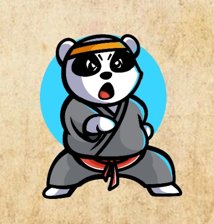

The Panda Power Token on Matic
Network
welcome to the world of PO, a fun,fast,
and fearless token that brings the unstoppable energy of kung fu panda to
the blockchain. inspire by evryone's favorite noodlr-loving. high-kicking
panda warrior , PO is more than just a token it is a trbute to po rhe clumsy but
determined panda who poroved that any one no matter how unlike can become a hero and just like
po this token has some setious kick!
What is PO?
po is a token built on the blazing fast matic Network also known as ploydon known for its low fees and high scalability but more than that po embodies the heart and spirit of kung fu panda resillence perseverancc e andd of course a love for dumplings we re it a tolen designed to rewardHelp Text
space where skill and patience always pay off just like po journey from a noodle chef to the fraon warriorWhy PO is Unique:
. kung fu panda power:
This token channel pos unstoppable
unstoppable spirit . he never gave up nd neither should you whether the market bullish
bearish or just plain sleepy po keeps on kicking.
.Matic mighty po moves faster than pos
cartwheeling kung fu stunts!
.community centered
like po learning from his friendw in thefurious five our token strengyh comes from the community
The Roadmap:
just like po journet to becomng the dragon warrior po has plan ro grow and evolve over time
Phase1:
The awakening initials launch on matic network listin on decentralized exchanges and the first community
Phase2:
dragon warriors era full integration into major crypto exchanges,parnerships with other meme tokens and a community vote on future utilities.
